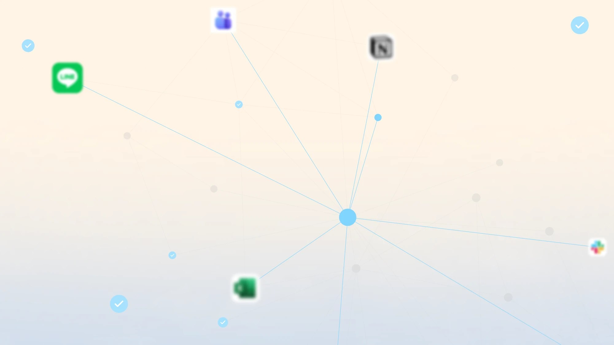
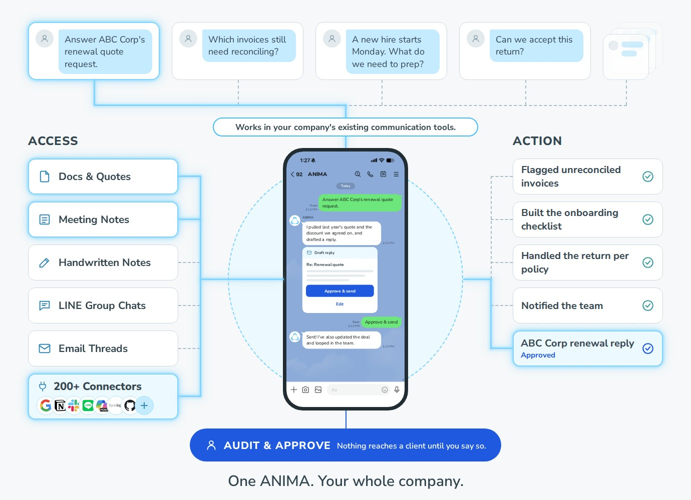
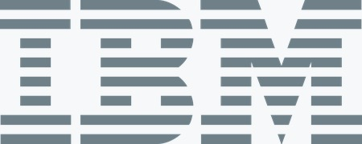

每週排定工項、預定日期與待辦事項。
「預定」的來源，日期寫法不統一。
ANIMA 讀取信件、ERP 與共享資料夾，整理成待確認的草稿，由負責人確認後送出。

ANIMA 讀取信件、ERP 與共享資料夾，整理成待確認的草稿，由負責人確認後送出。
先看現在一張報價要經過幾個人、幾套系統。
問題不在系統不夠多，而是系統之間靠人工轉貼。
ANIMA 把現有的系統串成一條流程，不用換掉任何一套。
讀取客戶信件與附件，對照 ERP 價目，產出報價草稿。
依金額與客戶等級分流，超過門檻才請主管核准。
負責人確認後寄出，三天沒回覆就提醒業務追蹤。
原本要一週，高端訂製旅行社
原本 10 位，同一家旅行社
原本兩天以上，工業設備服務商
導入客戶的實際數字，出自 sales deck「導入成果」。
2026 年 7 月在台灣上線，9 月的數字。
客運57，115/01/12～01/18，取自實際週報與 LINE。

業務把客戶的需求單拍照傳到群組。
讀出品項與數量，對照 ERP 的料號和價目。
依客戶等級套用折扣，排好報價單格式。
負責人看過、按確認，才會寄給客戶。
一個 ANIMA 接起整間公司的事。
看完五份資料後，To-be 就照這三點設計。
1/15 會報講的日期，出現在 2/11 的工期表。
每日出工回報對得上工期表的實際日。
金額、驗屋戶數、協調事項。
| 能力 | M365 Copilot | Gemini Enterprise | Claude Team | ChatGPT Business | ANIMA |
|---|---|---|---|---|---|
| 搜尋公司資料＋來源引用 | 支援 | 支援 | 支援 | 支援 | 支援 |
| LINE 群內 @Agent | 不支援 | 不支援 | 不支援 | 不支援 | 支援 |
| Teams 群內 @Agent | 支援 | 部分 | 不支援 | 部分 | 支援 |
| 地端部署 | 不支援 | 部分 | 不支援 | 不支援 | 支援 |
各家官方產品資料，查閱日期 2026-08-23。部分＝部分支援或需額外設定。
W0～W8，一次性費用，依 PoC 範圍報價。
PoC 後，獨立計費，依資料量報價。
依 PoC 實測用量，兩種選法。
客戶原話放這裡，一到兩句，取得本人同意後才能用
〔姓名〕〔公司、職稱〕
換成取得本人同意的原話；沒有的話這頁不要用。
客戶原話放這裡，兩到三句，說清楚導入前後差在哪
〔姓名、公司、職稱〕
第二則原話，一句
〔姓名、公司〕
第三則原話，一句
〔姓名、公司〕
ANIWEAVE 先做空間導覽與設計的視覺 AI，再把「整理脈絡」的能力用在公司內部，做出 ANIMA。
一個 ANIMA，就是整間公司
報修訊息從 LINE、電話、Email 進來，由客服手動轉給技師。
判斷類型要看經驗，資深客服請假就卡住，派工平均要兩天以上。
ANIMA 讀取報修內容、判斷類型、指派負責人，排進看板，由主管確認。
先補權限排解的 SOP，影響最大。
數字取自 sales deck 場景 C 的產品示意頁。
結構期 113/12/16～12/22，會議預定 vs LINE 實際。
13F 頂版澆置準時
9F 石膏磚隔間晚 7 天以上
10～11F 防火門已延 2 次
第 1～2 週。在既有群組開通，從 2～3 個最耗時的場景開始。
第 3 週。看實際用量選方案，開始計費。
之後。從一個部門擴到更多群組，依用量調整方案。
| 群組與角色 | 客戶與報價 | 帳款與發票 | 專案文件 | 公司 SOP |
|---|---|---|---|---|
| 業務群 | ||||
| 財務群 | ||||
| 專案群 |
陳小姐想把交期改到下週五，電話 0912-345-678，統編 12345678。
客戶A12想把交期改到下週五，電話 P1，統編 T1。
對照表留在企業端，不送進模型。
已草擬回覆給陳小姐，交期改為下週五，等您確認後送出。

有客戶授權的換成 logo（<img>，會自動轉單色）；沒有授權的寫產業名。
台灣中小企業，2025 中小企業白皮書
用鼎新 ERP 的公司
ANIMA 上線三個月的 SMB 部署
另外，15～65 歲的人有 93% 用 LINE。數字出自投資人簡報「進市場」頁。
台灣中小企業，2025 中小企業白皮書
用鼎新 ERP 的公司
9 個產業，2026 年 9 月
用 12 月的資料推算各節點，再拿實際回頭對。
使照取得，延誤集中在拆架
已 close US$ 1.3M
Pre-seed SAFE，本輪目標 US$ 3.3M。
工程與團隊
GTM
營運與法務
已 close
工程與團隊
GTM
營運與法務
簽下半導體大廠年約
一個月後第一個付費客戶
兩家大企業試行中
在客戶最重視的產業做深
LINE、Slack、Teams 直接 @ANIMA
文件、對話、表單一起找，附出處
報價、回覆、會議紀錄照公司格式
期限到了自動提醒負責人
ERP、CRM、雲端硬碟、Email
每個群組看得到的範圍照角色分
送進模型前先換成代號
對外的東西一律由人按確認
| 節點 | 推算 | 實際 | 差異 | 天 |
|---|---|---|---|---|
| 14F 頂版 | 1/4 | 1/4 | 0 | |
| 16F 頂版 | 2/16 | 2/17 | +1 | |
| 18F 頂版 | 3/23 | 3/27 | +4 | |
| 拆架 | 8/5 | 9/25 | +51 | |
| 使照取得 | 11/3 | 12/23 | +50 |
標準每層 15 天。17F 與 R 層的延誤有記錄原因（年假、天候），13F 沒有。數字為示意。
每週排定工項、預定日期與待辦事項。
「預定」的來源，日期寫法不統一。
每天出工、人數、完成回報。
「實際做到哪」的來源，最完整的第一手資料。
金額、驗屋等不在會報與 LINE 裡，要另外問。
進度條手動塗色，名稱與期間對不上。
一套公式推算，前段一動後段就要人工修。
| 清單項目 | 資料來源 | 狀態 |
|---|---|---|
| 時程節點 | 工期表＋LINE | 已提供 |
| 延誤原因 | 會報＋LINE | 已提供 |
| 發包、執行金額 | 預算書 | 串接或人給 |
| 開工文件 | 目前不在 LINE | 要問誰 |
每一步都在上一步完成後才開始。
前、中、後期看哪些節點與 KPI
每個 KPI 對到資料來源
LINE 群組與工地會報
與人工版並行比對，再停做 PPT
3 次新創 IPO｜企業財務｜成長策略｜前 EY 併購顧問
與半導體大廠簽有年約
以 10 人團隊用量為參考，實際方案依用量訂定。新台幣，未稅。
一個群組試用
一個部門
跨部門協作
全公司
PoC 起步，可選 hybrid 或完全地端
aniweave.ai
兩週內完成流程訪談，第三週開始串接。